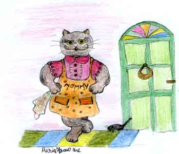
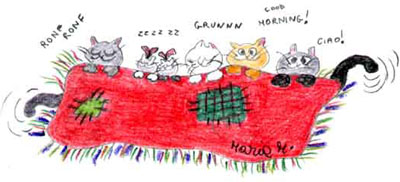
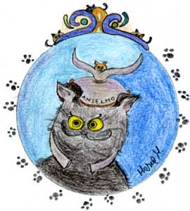
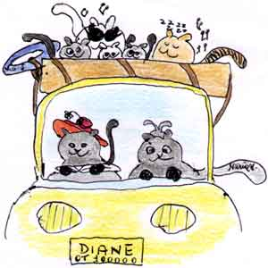
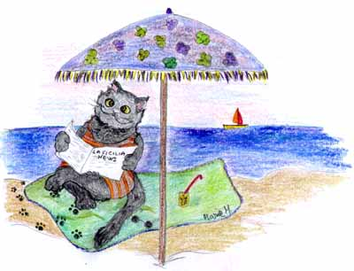
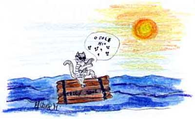

La scampagnata

Si stava organizzando sin dalla mattinata
essendo la giornata afosa e sciroccata
lieta, una scampagnata in quel di Taormina
sito molto alla page, nei pressi di Messina.
Vestita da cocotte, Mommy sulla roulotte
assestava zampate per svegliare i dormienti
senza fare commenti, ignorando i lamenti.
Sette sconsiderati sonnolenti e sgomenti
non ancora partecipi dell'allegro progetto
si ritrovano svegli ma ronfanti sul letto.
Ecco i partecipanti in ordine di stazza
senza considerare il colore e la razza.

Mommy l'organizzante, ciarliera e petulante
Anselmo, lo spretato, nero e morigerato
Martino, l'artista di strada, facile alla legnata
Bimba, la verginella scontrosa e portaiella
Teddy che fa il cantante e intrattiene in mutande
Willa, la sua pupilla e Wilma sottocoperta
la sua seconda scelta.

I sette samurai, fetenti e portaguai
si mettono in cammino, addobbati a puntino.
Anselmo con un elmo vestito da velista
Mommy, la gatta nera che sembra una surfista
Martino con perizoma, piccante e birichino
Bimba sembra un fagotto
con un costume antico del quindici-diciotto
Teddy, il cantante cieco
in look di pizzo bianco ti vedo e non ti vedo
e infine le gemelle con bikini di raso
strass sull'ombelico ed orecchino al naso.

Finalmente si parte ancora con il buio
e guida la roulotte Mommy, la gran cocotte
fa da navigatore, seduto alla sua destra
Anselmo con le mappe e un fiore di ginestra.
Acceso il karaoke con zampa fiera e lesta
Teddy avvilisce il gruppo da mane sino a siesta.
Assordati e confusi da tanta melodia
il gruppo alfine arriva ritrovando la via.
Finalmente i sette sbarcano sulla spiaggia di Giardini
e si piantano le tende nella zona dei villini.
Un gruppo di tedeschi pensando a un'attrazione
per allietare un poco spiaggia e balneazione
cominciò a fare scatti a Mommy sulla sdraio
e al nero gatto Anselmo che sembrava col saio.
E Bimba che per caso era senza bretella
ad un turista inglese diede pure una sberla.
Martino, lapidario intratteneva
una signora greca che beveva.
Teddy cantava inni in alto mare
rischiando a un certo punto di affogare.
E sulle gemelle allungavano le mani
due studentelli allegri, forse californiani.
Tutto filava liscio, soave e ameno
quando dall'onda emerge un cane scemo
Fiocco, vecchio barbagio dinoccolato
faceva una nuotata male osservato
con la padrona piena di letizia
sembrava una salsiccia con la spezia.
Ma quando l'iroso plana sulla spiaggia
con gli occhiali da sole un po' appannati
purtroppo non s'avvede dei dannati.
E si sgocciola il cane sopra Anselmo
e gli bagna la coda e pure l'elmo.

Sorpreso, il mite gatto si sveglia immantinente
e rimane allibito per quel cane demente.
Dalle parole ai fatti, il passo è breve
Dalla brandina Anselmo scivola lieve
assestando un ceffone a quel cane villano
quasi fosse un solfeggio sulla punta di mano.
Martino di soppiatto con fare quatto quatto
interviene a sedare quella rissa volgare.
Fiocco ribatte con fare risentito
spiaccicando su Bimba sulla sdraio presa a nolo
le ultime vestigia dei resti di un ghiacciolo.
Le gemelle con gli studenti californiani
intervengono allegre a menare le mani.

E Teddy dal canotto, come un controfagotto
intona una marcetta per quella folla inetta.
Intervenne alfine persino una bagnina
e visto che l'effetto non sortiva
mollò quattro remate su quella comitiva.
Ma al tramonto la calma ritornò sulla spiaggia
perché la lite alfine non fu tanto selvaggia.
Fiocco asciugò ad Anselmo elmo e coda
facendo assieme un giro su pagoda.
Quest'ultimo accettò e un falò organizzò.
E fra risa, pesce fresco sberle e lenze
la gita si concluse senza grosse conseguenze.
Si fece alfine un grosso barbecue
e Bimba danzò perdendo ogni tabù
…togliendosi persino…
gli zoccoli e il tutù.

Fiocco: il bagnante che distrattamente si sgrulla sull'elmo di Anselmo
Mommy: gatta nera organizzatrice di gite, furti ed altro. Segni particolari, dormire sotto i letti altrui.
Anselmo: anziano gatto nero con gli ammortizzatori bassi. Segni particolari, dormire sopra i letti altrui.
Martino: il busker
Teddy: il cantante
Bimba: la zitella per scelta. Pudica all'inverosimile, veste solo in stile minimalista.
Willa e Wilma, le gemelle: ehmmm… tutto il contrario di Bimba. Lolite.
L'Autrice e il suo Muso Ispiratore